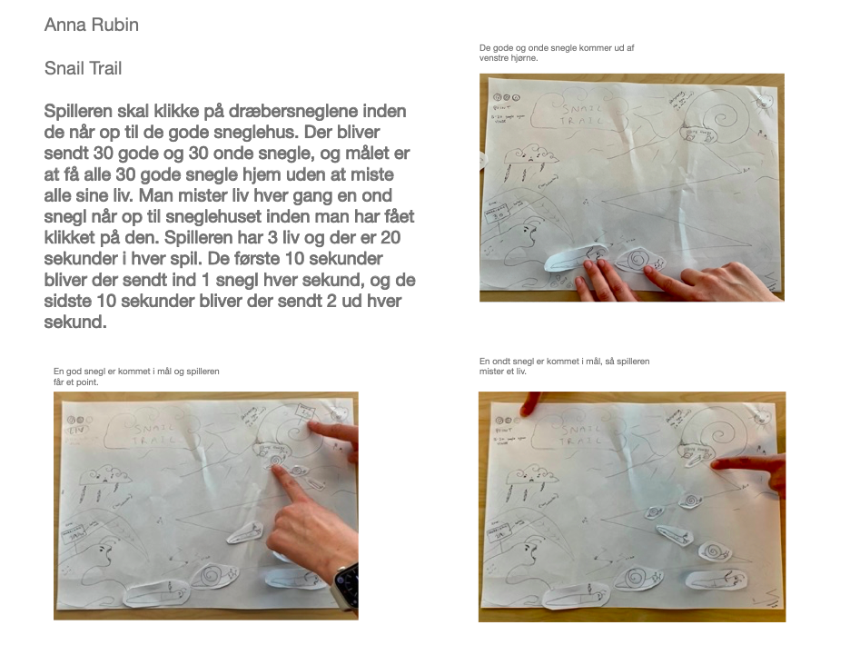

Ideer
FEED CREED
Jeg ville give spillet en lille bid af et større budskab, som jeg selv brænder for. Derfor landede jeg med et spil i en plantebaseret verden. Der falder både dyr og grøntsager ned fra himlen, men Creed vil kun spise planterne. Hans udseene er inspireret af hovedrollen i tv-serien Midnight Gospel, som også har lilla hud og blåt hår. Universeret er dystopisk, ligesom som vores verden kommer til at være, hvis menneskernes kødforbrug forbliver så højt som det er nu.
Original ide: "Snail Trail"
Da jeg først startede spil processen, havde jeg en ide der slet ikke minder om det spil jeg er endt med nu. Grunden til at jeg ændrede spillet var fordi synes at den originale ikke ville være særlig sjov at spille. Jeg inkluderer et lille udklip af den første ide, for at vise, at idegenerering ikke altid er lige til.
Alle de andre skitser på vejen...
Det tog lidt tid før jeg landte på den endelige ide...